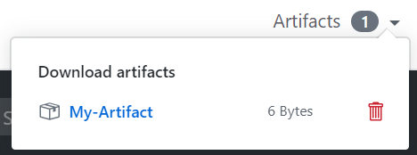

In this tutorial we will learn about Alcide Kubernetes Advisor, and how we can integrate it with GitHub Actions to implement continuous security and cluster hygiene for one or more Kubernetes clusters.

Alcide Advisor is an agentless Kubernetes audit, compliance and hygiene scanner that's built to ensure a friction free DevSecOps workflows. Alcide Advisor can be plugged in early in the development process and before moving to production.
With Alcide Advisor, the security checks you can cover includes:
- Kubernetes infrastructure vulnerability scanning.
- Hunting misplaced secrets, or excessive privileges for secret access.
- Workload hardening from Pod Security to network policies.
- Istio security configuration and best practices.
- Ingress Controllers for security best practices.
- Kubernetes API server access privileges.
- Kubernetes operators security best practices.
- Deployment conformance to labeling, annotating, resource limits and much more ...
- A repository on GitHub
- Access from GitHub to your kubernetes cluster

Alcide Kubernetes Advisor runs against a kubernetes cluster and requires access to kubeconfig to authenticate & authorize itself to the cluster.
If your GitHub Action can run kubectl commands against the cluster successfully - you should be ready to initiate a scan.

Your GitHub Actions workflow defition
name: CI
# Controls when the action will run. Triggers the workflow on push or pull request
# events but only for the master branch
on:
push:
branches: [ master ]
# A workflow run is made up of one or more jobs that can run sequentially or in parallel
jobs:
# This workflow contains a single job called "build"
build:
# The type of runner that the job will run on
runs-on: ubuntu-latest
# Steps represent a sequence of tasks that will be executed as part of the job
steps:
# Checks-out your repository under $GITHUB_WORKSPACE, so your job can access it
- uses: actions/checkout@v2
- name: Write kube config from secret to file
env:
KUBE_CONFIG_DATA: ${{ secrets.KUBE_CONFIG_DATA }}
run: |
echo "${KUBE_CONFIG_DATA}" | base64 --decode > /tmp/config
echo "::set-env name=KUBECONFIG::/tmp/config"
- name: Scan Cluster
uses: alcideio/advisor-action@v1.1.0
with:
exclude_namespaces: '-'
include_namespaces: '*'
output_file: 'advisor-scan.html'
- name: Upload Alcide Advisor Scan Report
uses: actions/upload-artifact@v1
with:
name: advisor-scan.html
path: advisor-scan.html
The GitHub Action will publish the scan results to Artifacts. In the top right corner of a workflow run, once the run is over, there will be a Artifacts dropdown which you can download items from.

In this codelab we added an automated scan of k8s cluster as an step in your GitHub Actions workflow.